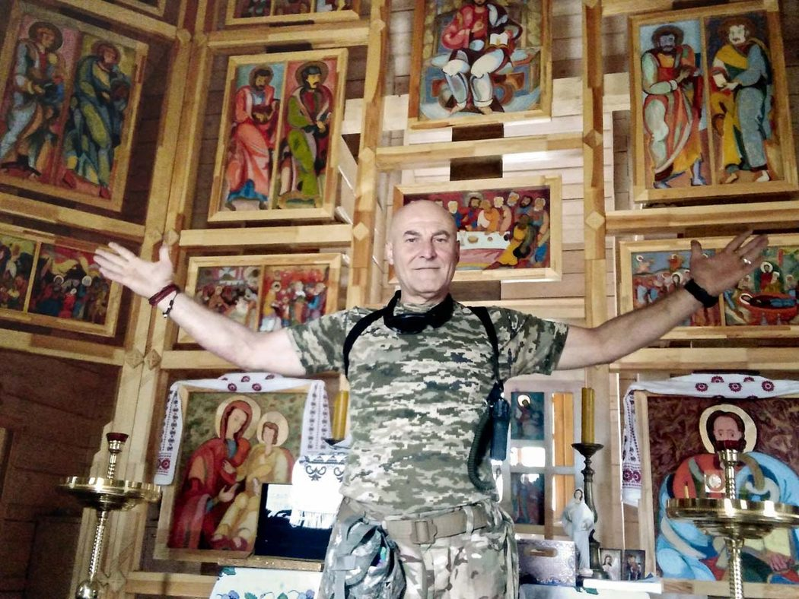
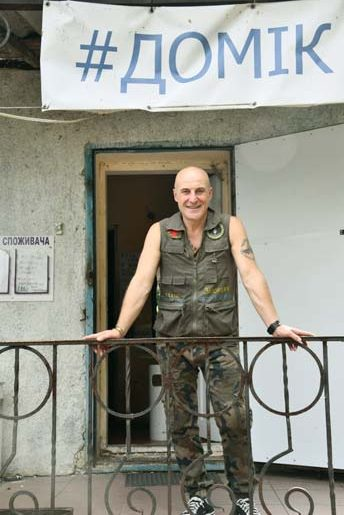
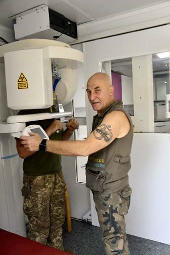
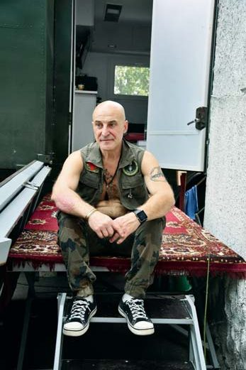
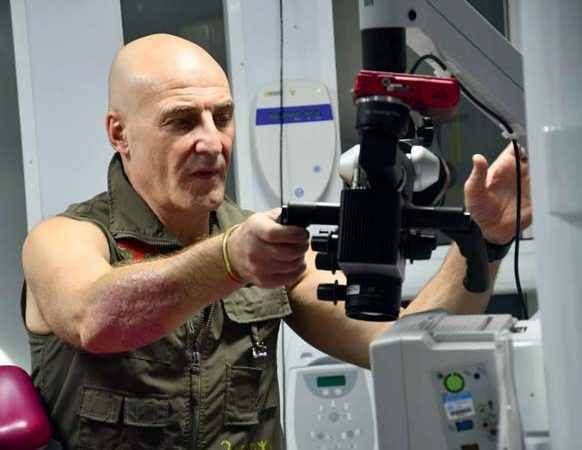
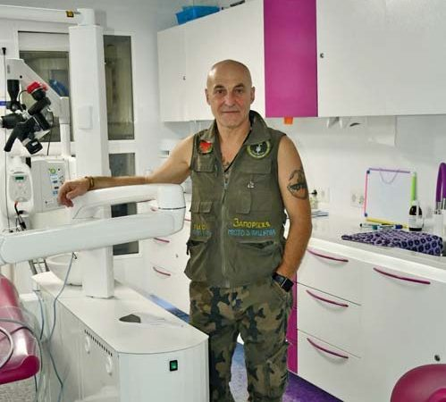
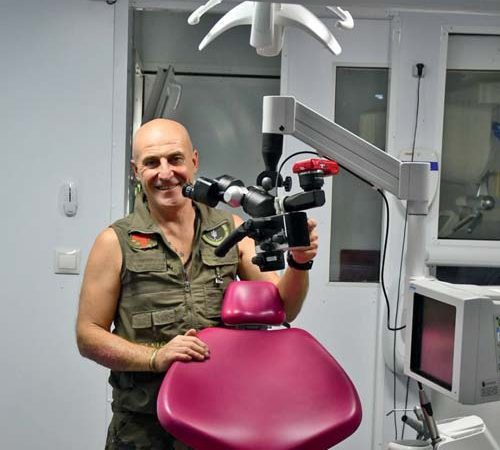
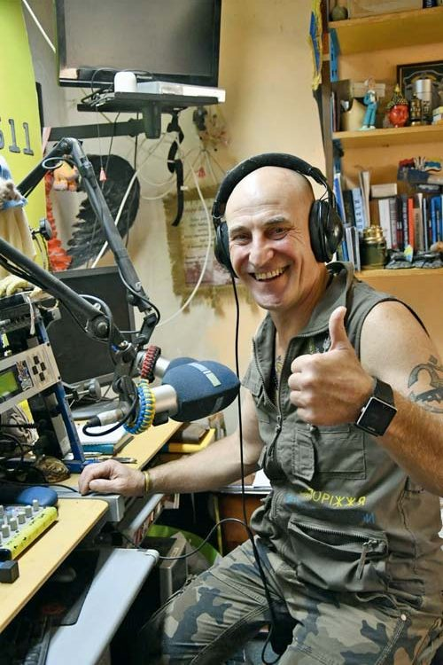
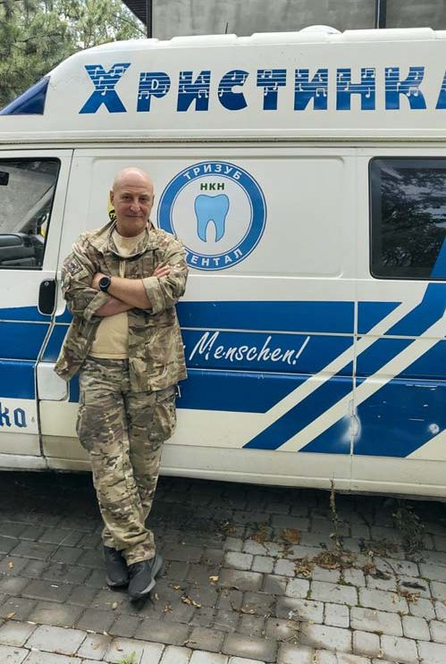
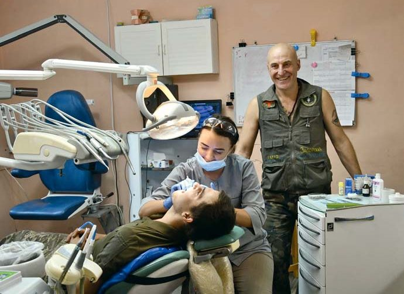

Вітальня · журнал «ДентАрт» 2023 №2
Капітан Ігор Ященко: «Проєкт «ТриЗуб Дентал» засвідчив величезні можливості стоматологічної спільноти»

Гість «Вітальні» — капітан ЗСУ Ігор Костянтинович Ященко, унікальна особистість, що поєднала військову справу і стоматологію. Він засновник потужного волонтерського стоматологічного руху «ТриЗуб Дентал», який розвивається понад вісім років і об'єднав сотні стоматологів у прагненні допомагати Збройним Силам і дбати про здоров'я захисників України.
Сьогодні на зв'язку з редакцією «ДентАрту» гість «Вітальні», з яким поспілкуватися можна не завжди, бо після повномасштабного вторгнення рашистських окупантів він зі зброєю в руках захищає Україну. Капітан ЗСУ Ігор Костянтинович Ященко — унікальна особистість, що поєднала військову справу і стоматологію. Він засновник потужного волонтерського стоматологічного руху «ТриЗуб Дентал», який розвивається уже протягом восьми років і об'єднав сотні стоматологів у святому прагненні допомагати Збройним Силам, дбати про здоров'я захисників і захисниць України.
Ініціатива кількох людей перетворилася на потужний стоматологічний рух
— Слава Україні! Шановний Ігорю Костянтиновичу, в Україні від Карпат до донецьких степів, від Сумщини до багатостраждального і героїчного Запоріжжя Вас знають передусім як засновника волонтерського проєкту «ТриЗуб Дентал», започаткованого у червні 2015 року з метою надання стоматологічної допомоги бійцям, котрі захищають нашу Вітчизну від окупантів-рашистів. Ви були тоді капітаном запасу ЗСУ, звільнилися з армії ще в 1993 році. Як виникла у Вас ця ідея, що об'єднала велику спільноту стоматологів волонтерською діяльністю під гаслом «Героям — зуби!»?
— Героям слава! Зараз я офіцер Збройних Сил України, виконую обов'язки начальника зв'язку в одному з батальйонів прекрасної бригади Добровольчого Українського Корпусу.
А тоді, на момент започаткування проєкту «ТриЗуб Дентал», я вже не почувався капітаном запасу, бо минуло багато часу від служби в армії, я з головою поринув у цивільне життя, у мене в Запоріжжі був бізнес — невелика, але дуже амбітна компанія «Дент Ленд» — звідси і моя пов'язаність зі стоматологією.
З дитинства я не любив несправедливості у будь-яких її проявах. І в буремні 90-ті, і наприкінці 90-х — на самому початку 2000-х мені як людині мислячій вже було зрозуміло, що моя країна опинилася в заручниках олігархічних кланів з проросійською орієнтацію. Я мав з чим порівнювати, бо багато подорожував по світу завдяки професійній діяльності, зустрічався з бізнес-партнерами в Німеччині, Італії, Греції, Іспанії, відвідував міжнародні виставки, щоб встановити партнерські зв'язки із закордонними виробниками.
У совєтській армії я служив і на території РФ — у Сибіру, на Далекому Сході, і я чітко розумів, що там перспективи для мене, для моїх нащадків немає — надто вже велика різниця у психології росіян і не зросійщених українців.
Я мріяв про справді незалежну, справедливу державу для своїх дітей, як і більшість громадян нашої країни. В принципі, це й окреслило подальший життєвий шлях. Це Майдан, це бажання допомогти захисникам України, посприяти у збереженні чи відновленні їхнього здоров'я, а від початку повномасштабного вторгнення — і захист Вітчизни безпосередній, ну і якщо доживу — то формування держави такою, про яку я мріяв…
— У Вікіпедії є інформація, що за 5 років учасники проєкту «ТриЗуб Дентал» пролікували понад 30 тисяч пацієнтів. Яка нині ця цифра і яких стоматологів та виробників стоматологічних матеріалів і обладнання Ви відзначили б як найактивніших учасників проєкту?
— Інформація у Вікіпедії вже застаріла. Але точну кількість військовослужбовців і цивільних осіб з територій, наближених до зони бойових дій, яких пролікували учасники проєкту, порахувати неможливо. Ми можемо звітувати лише про тих пацієнтів, котрі безкоштовно лікувалися у наших волонтерських кабінетах. Але багато хто з них доліковувався потім у приватних клініках і кабінетах стоматологів — учасників проєкту, які доводили розпочате лікування до завершення. Стоматологи, котрі приїжджали на кілька днів, щоб попрацювати у проєкті, поверталися до цивільного життя. Та запал ентузіазму, волонтерства у них не згасав, тому вони пропонували допомогу нашим воїнам, тим пацієнтам, лікування яких розпочали у наших волонтерських пересувних кабінетах, уже у власних клініках і кабінетах. І так з часом, поступово ініціатива кількох людей перетворилася на потужний стоматологічний рух «ТриЗуб Дентал».
Його епіцентром був наш «Домік» у селі Карлівці на Донеччині, логістичний центр зі складом витратних матеріалів та стаціонарним стоматологічним кабінетом. Там збирали потрібну інформацію, туди зверталися з пропозиціями про надання допомоги матеріалами, інструментами, лікарі запитували, коли й куди можуть приїхати попрацювати. Точно порахувати результати роботи такої великої спільноти, усього цього стоматологічного руху, неможливо.
Найбільше я пишаюся повністю санованими пацієнтами, результатами, які отримали наші лікарі, відновлюючи жувальну функцію у багатьох-багатьох людей. Військовослужбовці з різних причин не надавали достатньо уваги своєму стоматологічному здоров'ю, а під час перебування на фронті проблеми загострюються. Та завдяки рухові «ТриЗуб Дентал» вони потрапляють у надійні руки фахівців, а це лікарі, які ведуть свою професійну діяльність за дуже високими стандартами, і ці стандарти не знижуються від того, що працює стоматолог не у своїй клініці, а як волонтер у прифронтовій зоні.
Пацієнти, яким пощастило отримати допомогу від таких професіоналів всеукраїнського рівня, переконуються, що стоматологам небайдуже їхнє здоров'я, а відтак і самі стають до нього небайдужими. Так виховується більш відповідальний і більш вимогливий пацієнт.
Практично з першого дня проєкту нам активно допомагали матеріалами й інструментами компанії, відомі на українському ринку. Передусім хотів би подякувати компанії «Панмед» з Одеси і особисто директорові панові Олександрові Шимченку за його громадянську позицію, за його жертовність. Отримували від них величезні обсяги допомоги, а це дуже якісна, доволі вартісна продукція, відтак іноді було аж незручно звертатися за допомогою, та спробуй про це заїкнутися, і від пана Олександра почуєш таке: «А чого це ви за мене маєте вирішувати, можу я допомогти чи не можу? Якщо я не зможу допомогти, я так вам і скажу. Але те, що ви мене обмежуєте в можливості допомогти, — це неприпустимо!» Отакий він у нас, пан Олександр Шимченко!
Ще хотів би відзначити компанію «Прем'єр Дентал». Приєдналося і представництво «Дентсплай Сірони» в Україні. Вони теж з перших днів допомагали з обладнанням дуже серйозним, і це дозволило перейти на якісно вищий рівень надання допомоги захисникам України. Не секрет, що на самому початку, коли такого обладнання і матеріалів ще не було, наше гасло «Героям — зуби!» світило як мета, а реальністю було «героям — пломби», навіть видалені зуби у надто запущених випадках. Але з часом завдяки волонтерській допомозі виробників стоматологічних матеріалів і обладнання ми надбали певний ресурс, відтак з'явилася можливість розширювати спектр допомоги.
З 2015 року до нашого руху приєднався Мирон Угрин, відомий імплантолог, голова Національної спілки стоматологів України. Він бачив розвиток проєкту по-своєму, і це було в той момент дуже актуально. Як людина широкого бачення проблематики, він тоді відчув головні проблеми стоматології для військових. Вони виїхали на полігон, обстежували бійців і дійшли до невтішного висновку, що у нас армія не санована, відтак стоматологічні проблеми у воїнів виникатимуть постійно, зокрема і в тих умовах, де не буде можливості надати допомогу. І саме Мирон Угрин акцентував увагу на тому, як важливо надавати стоматологічну допомогу на етапі до потрапляння бійців у зону бойових дій.
Ще хочу сказати кілька слів про компанії, які не хотіли афішувати свою допомогу. Це було пов'язано передусім з тим, що бренди, які вони представляли на українському ринку, у перші роки російської агресії не були однозначно на боці України. Але потайки ці компанії допомагали, і теж досить потужно. Настане час, і ви про них теж дізнаєтеся.
До речі, ось нещодавня інформація: компанія «Укр-Медмаркет» (генеральний бренд, який вони представляють на українському ринку, — «Planmeca») надала п'ять пересувних стоматологічних кабінетів. Це нове обладнання, все від «Planmeca», зараз його запускають у дію, набирають штат, відпрацьовується алгоритм, як вони будуть працювати. Велика дяка їм за це!
— Знаємо, що окрім лікування не дуже складних клінічних випадків та профілактичних заходів, волонтери проєкту провели і багато дуже складних операцій. Де їх робили? Які етапи розвитку пройшов ваш проєкт?
— Він пройшов три глобальні, я так вважаю, етапи розвитку. Перший етап — це той, коли у Запоріжжі ми вже зрозуміли, якими великими є проблеми зі стоматологічним устаткуванням для військової стоматології. Навіть коли є військові стоматологи у штаті, їм не було на чому працювати. До того ж і протоколи, за якими вони лікують бійців, застарілі, це все технології 1970-80-х років.
Та й взагалі, військова стоматологія виявилася неготовою до тих викликів, які перед нею поставила війна. На яких принципах базується доктрина медичної допомоги бійцям? Надати першу ургентну допомогу і відправити у тиловий шпиталь, де вже долікують, прооперують і т. д. Та навіть у госпітальній ланці ти не можеш займати ліжкомісце більше 10 днів, якщо я не помиляюсь, бо маєш звільнити місце для наступного пацієнта. Узагалі, військова стоматологія, за тими підручниками, за якими готували військових стоматологів, — це хірургія. Травма у щелепно-лицьовій ділянці — зашинувати, видалити те, що треба видалити, стабілізувати стан пацієнта і відправити його у тиловий госпіталь… А якщо боєць звертається із зубним болем, то знову на допомогу приходить хірургія — видалення зуба позбавить пацієнта від болю. На лікуванні акцент ніколи не робився.
Ця система могла б бути прийнятною, якби державна стоматологія працювала настільки ефективно, щоб в армію потрапляли люди стоматологічно здорові. Але дев'ять років тому, на початку війни, державна стоматологія вже була розвалена, а приватний сектор цими питаннями ще не переймався, та й не міг він, згідно із законодавством, замінити державну стоматологію. Державна медицина була в глибокому занепаді, існувала тільки на власній ініціативі окремих лікарів.
Приватна стоматологія розвивалася інакше. Наприкінці 1990-х — на початку 2000-х років багато стоматологів зорієнтувалися в ситуації, вклали всі свої заощадження, відкрили власні кабінети й клініки і зуміли сформувати у своїх пацієнтів переконання, що здорові, красиві зуби — це круто! Наші стоматологи скористалися можливістю виїжджати за кордон на відомі світові виставки, ярмарки, конференції, завозити в Україну сучасні технології. І приватна стоматологія стала швидко розвиватися…
До чого це я веду? До того, що це вплинуло і на розвиток нашого проєкту. До 2014 року ініціативу в стоматології значною мірою придушили, державні чиновники сиділи на роздачах дозволів, ліцензій, сертифікатів… Події 2014 року почали виводити стоматологів із зони угодовства. Те, як українці вийшли на Майдан, як вони вимагали реформ у країні, не могло пройти мимо них, і стоматологи як спільнота стали більше спілкуватися між собою на цю тему. Коли наш проєкт почав потроху розвиватися, ми стали публічно його висвітлювати. Розповідали: знайомтесь, ось бійці, ось їхні ордени, медалі… А тепер подивіться на їхні зуби… Ось цей юнак ніколи їх здоров'ям не переймався, але невже наш відважний захисник не вартий того, щоб ми допомогли йому вирішити цю проблему? І це стало поштовхом для багатьох колег.
Перший етап розвитку проєкту «ТриЗуб Дентал» — надання ургентної допомоги, але все-таки це не тільки хірургія, а й лікування. Потім ми зосередилися на тому, щоб надати допомогу військовим стоматологам, бо до сьогодні держава не закупила жодного пересувного стоматкабінету. В усіх шпиталях прифронтової зони усі стоматологічні кабінети — цілковито волонтерська заслуга. Це така різноманітна база, різні установки, непрогнозований сервіс, і ми розуміли, що коли й допоможемо, то цей механізм, тільки запустившись, зупиниться. Тому ми змушені були висвітлювати цю проблематику, збиратися на конференції, засідання, запрошувати туди державних чиновників, військових стоматологів, напрацьовувати для них протоколи лікування, які були б економічними з точки зору фінансів і доволі сучасними й ефективними з точки зору стоматологічної допомоги. Це був такий не дуже бурхливий, але тривалий етап, до 2018 року…
У багатьох клінічних випадках закінченням лікування є протезування. І коли ми зіткнулися з тим, що декого з військовиків треба ж і протезувати, імплантувати, активну участь у проєкті взяв Мирон Угрин. Спочатку він приїжджав у Запоріжжя, Маріуполь, ближче до зони бойових дій, і ми привозили туди бійців, хоча щоразу це було проблемно: треба було знайти транспорт, домовитися з усіма командирами, ці воїни не мали бути задіяні ні в бойових, ні в підготовчих до бойових діях. Непросто було все це узгодити, організувати, і тому ми дійшли висновку: якщо гора не йде до Магомета, то Магомет прийде до гори… А чому б ні? І чому б не в тій самій Карлівці на Донеччині? І Мирон Миронович загорівся цією ідеєю — створити там комфортне робоче місце, сучасне, яке було б повністю підготовлене технологічно для «високої стоматології», бо в стаціонарному кабінеті в «Доміку» це завжди було з якимись компромісами. А ми знаємо прекрасно, що лікар працює з гарантованим кінцевим результатом, коли не йде на компроміси, коли працює за вивіреними протоколами і під ці протоколи має весь потрібний набір обладнання, витратних матеріалів і т. д.
Тому й народився пересувний стоматологічний комплекс «Слон» — величезний автомобіль, який раніше був на кіностудії Довженка знімальним авто, бо ми шукали транспорт, де було б набагато більше місця, ніж у стислому просторі нашого кабінету, для того, щоб у 4-6 рук стоматолог з помічниками міг виконати роботу, яку ми називаємо «високою стоматологією», зокрема імплантацію. До цього проєкту підключилися волонтерські спільноти, бізнесмени… Мирон Миронович просто жив цією ідеєю і багато зробив для залучення до нього людей, які мали таке бажання і кошти. Так і з'явився у нас 2019 року цей «Слон». Ми його поставили на чергування в Карлівці, і тоді почалися планові приїзди бригад лікарів, які прибували на 4-5 днів і виконували цю складну професійну роботу. А стоматологи, які прибували раніше на тижневу ротацію чи й більше тижня, провадили терапію і готували пацієнтів для подальшого протезування.
Ще такі бригади стали виїжджати у Дніпро, Київ, Львів — у медичні заклади щелепно-лицьової хірургії Міністерства оборони, шпиталі, куди відправляють складних пацієнтів із зони бойових дій. Там готували операційну, а бригада волонтерів прибувала зі своїми матеріалами, імплантами, кістковими замінниками і допомагала воїнам — тим, хто був після поранення або пережив ампутацію, і не треба було людей на протезах везти в Карлівку… Ось такі етапи пройшов наш проєкт.









Волонтерський стоматологічний рух «ТриЗуб Дентал»: пересувні кабінети, комплекс «Слон» та лікарі-волонтери. Фото з архіву Ігоря Ященка.
У проєкті вже попрацювали понад 200 лікарів
— Стоматологи — самостійники, через приватну стоматологію не піддаються командам і наказам, працюють на самофінансуванні… Тож як вдалося велику їх кількість зорганізувати на добру справу на волонтерських засадах?
— Певний час якась частина місцевих стоматологів у прифронтовій зоні розцінювала нас як конкурентів, бо ж їм треба було за гроші працювати (а як інакше виживати у таких складних умовах?), а тут якісь волонтери безкоштовно все роблять. Та ми не підставляли місцевих стоматологів, навпаки, часом навіть допомагали.
А щодо тих, хто багаторазово приїжджав, щоб взяти участь у проєкті «ТриЗуб Дентал», то вони говорили, що приїжджали не тільки щоб допомогти нашим захисникам і захисницям, а й за відчуттям професійної свободи. Лікар тут не обтяжений ні грошовими питаннями, ні статусними, він як фахівець має засоби, сучасне обладнання, інструменти, матеріали, нормальну діагностику може зробити, і його завдання — обрати найкращий план лікування для пацієнта. І більшість стоматологів від цього просто кайфували! Багато хто говорив: «Я нарешті відчув себе лікарем, а не бізнесменом! Дякую вам за це!»
За час розвитку у проєкті вже попрацювали понад 200 лікарів, це тільки ті, що особисто до нас приїжджали. Ядро цієї групи — понад 40 лікарів, які приїжджали по 10 і більше разів, для яких це стало правилом життя. За чим вони приїжджали? За отим відчуттям професійної свободи і керовані любов'ю до України та її оборонців, які сьогодні захищають найвищі людські цінності від підступів диявола. Стоматологи мають можливість допомогти ЗСУ, допомогти воїнам не через посередників, а напряму. Ти приїхав, ось твій боєць, ти бачиш його очі, ти відчуваєш усе, що він пережив, запах бліндажа, окопа, буржуйки… І ти допоможеш йому тим, що ти вмієш найкраще у своєму житті…
— У звичайному професійному житті стоматолог веде пацієнта стільки, скільки треба для завершення лікування, і тоді стоматолог несе повну відповідальність за результати свого втручання, яке може тривати місяцями і навіть роками… Але у волонтерському проєкті «ТриЗуб Дентал» у одного пацієнта лікарі міняються через обмежений час для волонтерської активності. Як у «ТриЗубі» вирішується комунікація між стоматологами, що працюють вахтами, в інтересах збереження здоров'я пацієнта?
— Дуже цікаве запитання. Стоматологи, наскільки я міг це бачити у довоєнному Запоріжжі, ведуть свій бізнес доволі замкнуто. У нашому ж проєкті «ТриЗуб Дентал» усе відбувалося з точністю до навпаки. Була зацікавленість у тому, щоб надати пацієнтові максимально якісну допомогу, але лікар, який прибував на нетривалу ротацію, розумів, що все встигнути він не зможе. Тому багато хто домовлявся з пацієнтами, щоб вони приїхали на доліковування в його клініку, а коли такої можливості не було, то треба було описати клінічну ситуацію, своє бачення її, план лікування і запропонувати цей план наступному стоматологові, який працюватиме з пацієнтом. У цьому нам ідеально допомогла комп'ютерна програма Clinniccards. На ринку стоматологічних програм, думаю, вона не єдина, але ми нею користуємося, і це дуже професійний інструмент для контролю і можливості доведення пацієнта до завершальної стадії лікування.
Ми з лікарями говорили про те, що добре було б подібну програму ввести на державному рівні — принаймні для пільгових категорій, яким держава має віддячити за певні заслуги чи допомогти як інвалідам. Бо цих пацієнтів дуже часто перекидають з одного державного закладу в інший, і така база даних про стан пацієнта і проведене лікування стала б у пригоді.
Отак я й закохався у стоматологію…
— Розкажіть більше про себе. Чому стали військовим і як потім шлях військовика перетнувся зі стоматологією?
— Було все просто, стандартно, як у багатьох сім'ях у ті часи. Закінчив школу, любив спорт, та моїми кумирами були, на жаль, не космонавти чи спортсмени, — подобалися хлопці із сусіднього двору, які були сильнішими, спритнішими, і мені хотілося бути схожими на них. Але щось мені таки підказало, що стати таким «крутим», як вони, — це не мій життєвий шлях, він до добра не доведе. І я пішов у військове училище, бо просто не розумів, що маю робити далі. А тут один товариш туди вступив, другий… піду і я. Так я потрапив у Сибір у військове училище зв'язку, закінчивши яке, п'ять років служив у Німеччині. І ці п'ять років, мабуть, і сформували мене як людину, що прагнула кращого майбутнього для своєї країни.
Так склалося, що у мене були серед німців знайомі і навіть друзі, ми багато спілкувалися, вони якимось чином розуміли мою ламану німецьку (я її ніколи не вивчав, просто на слух навчився вимовляти якісь слова, навіть фрази). Мене зацікавив спосіб життя простих людей, якими були і мої друзі, я побачив їхню спокійну впевненість у завтрашньому дні, що так контрастувала з постійною тривогою про шмат хліба насущного у моїй країні. Коли я із Запоріжжя приїжджав до бабусі в село, то бачив величезну різницю між містом і селом. Селяни, тяжкою працею заробляючи копійки, ще й намагалися їх ощадити, щоб послати своїх дітей на навчання у місто. Приїжджали ті діти у Запоріжжя і з'ясовували, що в інститут їм не вступити — вони випускники сільських україномовних шкіл, а всі інститути — російськомовні. Залишалося вступати в технікуми чи профтехучилища. Тобто навіть талановитим дітям шлях до «висшего общєства» був перекритий на державному рівні.
А в Німеччині немає жодної різниці, де ти мешкаєш (навіть в НДР, я вже не кажу про ФРН). Я там служив, коли в листопаді 1989 року розвалили той мур між Західним і Східним Берліном, коли Німеччина у жовтні 1990 року об'єдналася, і я бачив лиця людей, я дивився на той «дикий Захід», яким нас лякали, і в моїй душі формувалося бажанням змін і для моєї Вітчизни. Я відчував, що у нас щось іде не так, ми не розвиваємося, як би то належало у ХХ столітті…
Як я перетнувся зі стоматологією? Дуже просто. Одружився з дівчиною, яка була стоматологинею. Допомагав їй відкрити кабінет, переймався її роботою. І так потроху-потроху втягнувся. Я спробував уже на той момент різні варіанти бізнесу, заробітку грошей. Що мені сподобалося у стоматології і стоматологах? Твій умовний чи потенційний клієнт — це зазвичай людина з вищою освітою, людина, яка заробляє гроші, а звернувшись до дилера за обладнанням чи матеріалами, розуміє, на що витратить свої кошти. Чи цікаво було б, наприклад, продавати картоплю на базарі, якби це приносило значні прибутки? Це нецікаво. А тут ти спілкуєшся з цікавими людьми, обмінюєшся інформацією, вони тобі розповідають, чого прагнуть і чого їм не вистачає у їхній повсякденній роботі. І можна подивитися, що на цьому напрямку у світі робиться, і навіть щось підказати тій людині…
Такі ось речі дозволили ставитися до цієї роботи — стоматологічного бізнесу, постачання стоматологічного обладнання, інструментів, матеріалів — як до чогось цікавого і важливого, як до справи, результати якої можеш побачити. Отак я й закохувався у стоматологію і стоматологів, і так триває й до сьогодні.
Як відбувалося визволення Донбасу від антиукраїнської пропаганди
— Ви також заснували радіо «ТриЗуб FM». Чи діє воно нині?
— Так, воно діє, в більшості все-таки працює, але в он-лайн режимі, тобто через інтернет-браузер або мобільні додатки можна його слухати.
Ідея цього радіо полягала в лагідній українізації Донбасу. Коли я перебував там у перші 2-3 роки, я вже бачив колосальні зміни у ставленні місцевого населення до наших воїнів, взагалі до присутності українського духу, українських цінностей, української культури. У мене багато друзів з Донеччини, які були щирими українськими патріотами і до того, — не будемо забувати про Майдан у Донецьку, кривавий той Майдан, куди привозили проросійських тітушок з палицями і ножами, але люди виходили, не боялися, хоча й розуміли, що це небезпечніше, ніж у Тернополі чи Запоріжжі.
На жаль, значна частина населення Донецької і Луганської областей через тотальну інформаційну війну ерефії, тиск рашистської пропаганди і культури як частини цієї пропаганди опинилася в полоні московитських наративів. Такими людьми дуже просто було маніпулювати. Пригадую, як у тій же Карлівці у 2015 році в магазині одна жінка з вибалушеними очима кричала: «Ето Порошенко всьо начал, войну устроіл!» А путін, виявляється, хороший… Минає час, рашистські окупанти сповна показують своє справжнє обличчя навіть колишнім своїм прихильникам, і та сама жінка, яка мені ту всю маячню викрикувала, просить у мене червоно-чорний прапор, бо вона відкрила чебуречну і хоче, щоб до неї заходили наші бійці, ставлення до яких у неї змінилося кардинально… Уявляєте, які метаморфози відбулися в мізках цієї людини?!
І ми розуміли, що цим людям треба просто допомогти. Вони нормальні люди, тільки десятиліттями їх лякали бандерівцями. Як відбувалося визволення Донбасу від антиукраїнської пропаганди? Бійці стояли в черзі в магазині поруч із місцевими мешканцями, купували якусь їжу; вони ремонтували свої машини на станціях техобслуговування, і місцеві люди з ними постійно контактували. І вони бачили, що це не якісь чорти з рогами, ці хлопці жартують, купують якусь цукерку-шоколадку і залишають продавчині, не пристаючи до неї, не відпускаючи фривольних жартів… Вони це роблять тому, що комусь вона нагадала його доньку, комусь — його наречену, а комусь просто захотілося побачити її усмішку, підняти їй настрій… І люди побачили, що оцей «бандерівець» із Закарпаття чи Львова розумніший, цікавіший за сусіда-шахтаря, нащадка завезеного у 1933 році на Донбас москаля, який бухає безпробудно, і всі йому винні, усіх уже задовбав, бухає та щось від усіх вимагає… Він проблемний, а ці хлопці адекватні. Якщо їх попросити, наприклад, полагодити паркан, вони прийдуть і зроблять, як тільки матимуть час, і грошей не візьмуть. Хіба якщо господиня пиріжків чи буханку хліба сама спекла, тоді гостинця візьмуть…
Отак українізація відбувалася природним шляхом. І хотілося в цьому допомогти, ідея радіо «ТриЗуб FM» у тому й полягала. Потрібен був радіомовний передавач, який би у прифронтову зону і на окуповану територію передавав українські пісні, українські новини, український гумор. Це неполітизована ефемка, ми не підтримували жодних політичних партій, уникали всього, що могло бути приводом до роз'єднання людей. Цього контенту у нас на радіо не було. Були тільки цитати про росію і росіян, вислови і політологів, і відомих медійників, які простими словами озвучували важливі речі: де біле, а де чорне, де правда, а де нахабна брехня.
Та переважно радіо транслювало ту музику, яка подобалася нам самим. Я сам із Запоріжжя, до війни я українську музику теж слухав нечасто. А тут відкрив для себе цілий невичерпний пласт української музичної культури, яка дуже цікава! О, нам пощастило, ми вже знаємо, тож розкажімо про це й іншим! І ми робили передачі з історії української музики, зокрема й про ті ще не такі далекі часи, 1980-ті, навіть 1990-ті роки, коли український контент утискався, але вистояв, і виконавці української естради дали після себе цілу плеяду нових музикантів нової культури. Нам самим це було цікаво. І мешканці Донбасу на це теж прекрасно реагували.
Ось хоча б такий приклад. Молода родина — чоловік, жінка, хлопчик і собачка — виїхала з окупованого Донецька на підконтрольну Україні територію, і одною із вагомих крапельок на терезах роздумів, виїжджати чи не виїжджати, якраз і було наше радіо. Вони знайшли нас випадково. Підійшли до машини, на якій ми приїхали, авто було щедро обмальоване нотами (його, до речі, нам подарувала співачка Христина Панасюк, яка назбирала на нього кошти концертами; ми його так і назвали — «Христинка», використовували для логістики, а тепер ця автівка виконує завдання на фронті). Отож, підійшли ті донеччани і запитали, чи маємо ми якийсь стосунок до радіо «ТриЗуб FM». «Так. А що?» — «Хотіли вам подякувати. Ми в окупованому Донецьку піймали ваше радіо, слухали потайки. Зрозуміли, що на неокупованій території України життя вирує, люди висловлюють свою думку, нічого не боячись, там є воля! А ми чого тут сидимо? Чого ми тут чекаємо? Треба звідси забиратися. Бо ми тут пропадемо. Син росте. З чим у голові він виросте?» І вони виїхали. До повномасштабного вторгнення і навіть після ми підтримували з цими слухачами нашої ефемки стосунки, а зараз уже військові шляхи нас порозкидали, тому не бачимось…
Треба серйозно замислитися над проблемами самоврядування у стоматології
— Ви брали участь у проєкті «Нові лідери», бо заявляли про потребу реформ у галузі стоматології, зокрема державної. Які проблеми, на Вашу думку, потребують першочергового вирішення?
— Так, я брав участь у цьому проєкті. Яка була мета? На той час наш волонтерський проєкт уже називався «ТриЗуб Дентал», уже був досвід, і відбулося дуже багато розмов з лікарями різного і фахового, і соціального рівня. Приїжджали, наприклад, інтерни і запитували, чи можна взяти участь у проєкті, щоб повчитися. На початку наша реакція була така: не треба вам вчитися на наших бійцях, це ж не муляжі, учіться десь в іншому місці, а сюди вже приїжджайте фахівцями… Але у 2018-2019 роках ми вже могли собі дозволити їх прийняти. Ми запитували такого волонтера, що його цікавить — хірургія, терапія чи ендодонтія — і повідомляли, коли прибуде лікар, який зможе бути його наставником.
Тож за останні п'ять років ціла плеяда молодих лікарів пройшла школу «ТриЗуб Денталу», і потім від них доводилося чути: «Костянтиновичу, якби я не потрапив у цей проєкт, я б не вигрібся з перешкод системи, коли без досвіду не беруть на роботу, а досвід де я набуду, якщо на роботу не беруть? Я після вишу не міг зробити рентгенівський знімок, у мене не було розвинутого клінічного мислення, була тільки теоретична база». Ці інтерни, працюючи з лікарями, які пройшли непростий шлях сходження до вершин професії, набували цінного і такого потрібного їм клінічного досвіду. От Алла Полозенко багато допомагала нашому молодняку, Валерій Камінський. Мирослав Солонько працював з ними, запрошував цих талановитих молодих лікарів приїжджати і до нього на курси. Тож окреслилися такі цікаві зв'язки дуже молодих спеціалістів з топовими стоматологами України…
І нині я з радістю бачу, що багато наших волонтерів, які приїжджали інтернами, відбулися як фахівці, і завдяки нашому проєкту теж. Я не кажу, що завдяки лише нашому проєкту, бо вони самі цього прагнули, доклали чимало зусиль, щоб відбутися як спеціалісти, але якась частина їхнього становлення — саме від «ТриЗуб Денталу».
Так от, під час обговорення ситуації зі стоматологічною освітою, з можливостями професійного становлення молодих фахівців окреслилася проблема, що державна система працює так, ніби не зацікавлена в тому, щоб молоді стоматологи ставали фахівцями. І хтось мав сказати про це. І я пішов на проєкт «Нові лідери», щоб озвучити ці проблеми, привернути до них увагу медійників, громадських активістів.
Наш проєкт «ТриЗуб Дентал» яскраво засвідчив величезні можливості стоматологічної спільноти, і це спонукає замислитися над проблемами самоврядування в галузі. Державне регулювання в тому вигляді, в якому воно існує, не сприяє розвитку стоматологічного бізнесу: тільки тотальний контроль, тільки обмеження, які обходять за хабарі… Тому я й хотів озвучити все це з телеекрана, узяти на себе якусь відповідальність за те, щоб у якомога більшої кількості людей сформувалося прагнення до позитивних змін. Я вже казав, що у мене з дитинства розвинуте почуття несприйняття несправедливості, тож я не можу миритися з вадами системи, її неефективністю, корупцією…
— Тут з вами солідарні мільйони українців. Не тільки за незалежну, але й за правову і праведну Вкраїну воюють сьогодні наші Збройні Сили, задля неї працюють мільйони волонтерів…
Я тут задля Перемоги України!
— Ми розуміємо, що як фронтовик Ви не можете оприлюднювати багато деталей того, де перебуваєте і що робите, але якусь загальну інформацію можете дати?
— Мене війна застала там же, в Карлівці, в тому самому «Доміку». Десь за тиждень до повномасштабного вторгнення мені вже було зрозуміло, до чого воно йдеться. Готувалися, як могли. Я записався в територіальну оборону, видали мені зброю. У мене було багато друзів-добровольців, тож я вирішив теж приєднатися до них.
Як фахівець-зв'язківець, я вже втратив свою професійність, бо минуло багато часу відтоді, як служив в армії, а військовий зв'язок тим часом розвивався. Але навички кадрового військовика збереглися — у мене є розуміння, що таке дисципліна, відповідальність, взаємодія… Тому мені було дуже просто інтегруватися вже у військове середовище, я пішов далі з тими добровольцями, яких прекрасно знав, які відступили до Карлівки з Маріуполя, фактично виходячи з оточення, і з територіальної оборони я перевівся у їхню частину, коли вона сформувалася як військова частина ЗСУ. Я тут не задля кар'єри, не задля грошей. Я тут задля Перемоги України. Я собі пообіцяв, я командирові пообіцяв, що буду з ним поруч до тих пір, доки буду йому потрібен.
Щодо місця розташування — Донбас не відпускає. Хотілося б воювати десь на Запорізькому напрямку, звільняти рідні краї, але їх є кому звільняти. До того ж дуже ціную свій бойовий підрозділ, де панує дух побратимства, ідеологія націоналістична — в гарному розумінні цього слова. Є велика мета, ми довіряємо один одному, ми всі побратими. Така атмосфера надихає, посилює дух ентузіазму — і є непогані результати польової роботи. Я дуже пишаюся підрозділом, в якому проходжу зараз службу, своїми побратимами. Після Перемоги про все це можна буде розповісти більше…
Міжнародні організації мають діяти, а не всоте повторювати мантру про «глибоке занепокоєння»
— Ваше рідне Запоріжжя постраждало від екоциду, який вчинили окупанти, підірвавши Каховську ГЕС. На Вашу думку, якими мали бути дії ООН, Червоного Хреста та інших міжнародних організацій після цієї катастрофи?
— Ми розуміємо, з ким ми воюємо. Нащадки ординців звикли жити в рабстві і намагаються ці рабські пута нав'язати українському народові, для якого воля — найвища цінність. Їхня мета, кажучи словами Тараса Шевченка, — «загарбать і з собою взять у домовину». І тут вони не гребують нічим — ні геноцидом, ні екоцидом. Ця війна почалася не 2014 року — вона триває вже понад століття. Це війна за нашу незалежність від російського мертвотного впливу, російського тотального нерозуміння того, що ми є нація, вільні люди, і ми під їхнім пресом не будемо жити. Уся історія російської імперії царського, більшовицького і путлерівського штибу свідчить, що московити розуміють тільки силу. Це дикі люди, які можуть боятися тільки сили. Весь їхній спосіб життя, вся ота блатна романтика, яка насаджувалася і в нас в Україні, особливо на Донбасі, трималися на силі, на чорній, на бездумній силі. Лише на ненависті і залякуванні вся їхня ідеологія і тримається.
Тому проти сили має бути тільки інша сила. Міжнародні організації мають змінити свою риторику на всіх рівнях — від отого «нє всьо так однозначно» чи «понять і простіть» перейти до конкретних дій, а не всоте повторювати мантру про «глибоке занепокоєння». Усе має бути просто й однозначно — є варварська дія, порушення статуту ООН, міжнародних угод — є покарання! Це покарання може бути фізичним, може бути на рівні фінансових ринків, економічному, політичному, виключення з міжнародних організацій… Усе це має бути жорстко: за кожну агресивну дію — покарання! Зупинити москалів від наступних жорстоких дій може тільки очікування, що покарання буде ще жорстокішим. На жаль, так у них у головах усе влаштовано. Я не бачу інших варіантів…
Хай не згасає громадянська активність наших стоматологів!
— Чи Ваші діти поділяють батькове захоплення стоматологією?
— Так, двоє моїх дорослих синів від першого шлюбу — лікарі-стоматологи. Життя склалося так, що зараз у мене друга сім'я, і третій мій син ще маленький, йому тільки шість рочків невдовзі виповниться, але я сподіваюся, що у нього буде велике майбутнє. Я дивлюся на цю дитину і думаю, що наші діти мають бути розумніші за нас, кращі. Моя сім'я нині в Польщі, бо рідний дім у Пологах Запорізької області, і кабінет, і бізнес — під окупацією. Дякуючи Богові і моїм побратимам, вдалося вивезти мою родину буквально за пів дня до окупації. Дружина продовжує професійну діяльність і в Польщі. Коли я подорожував Європою, я бачив, як відновлювалася, як змінювалася Польща, коли вступила в ЄС. Тепер і дружина побачила, як це діє, коли функція держави полягає у тому, щоб створити сприятливі умови для працюючих людей, допомогти їм втілити якісь професійні амбіції — і після того збирати з них податки. Я і раніше про це говорив: надважлива функція держави — дати можливість своїм громадянам розвиватися, втілювати свої професійні амбіції…
— Що б Ви побажали стоматологам, які читатимуть це інтерв'ю, у цю вирішальну для українського народу і всього цивілізованого світу пору?
— Мабуть, найбільше я хотів би побажати нашим стоматологам не втратити той рівень довіри один до одного і комунікації, який виник у складних обставинах війни і нашої спільної волонтерської діяльності. Не всі витримали це випробування війною, коли постала дилема: Перемога або смерть! Хтось виїхав за кордон, хтось просто зник з інформаційного простору. Але на їхнє місце стали сотні інших, і нині надання волонтерської стоматологічної допомоги захисникам набуло такого масштабу, про який я на початку проєкту і не мріяв. «ТриЗуб Дентал» сьогодні — це повноцінний стоматологічний рух, який розвивається і координується без якихось адміністративних важелів. Це викристалізувана патріотизмом і активною громадянською позицією спільнота, яка має стати надалі рушієм позитивних змін і в нашій стоматологічній галузі, та й у країні в цілому.
Ми обов'язково переможемо у цій війні, бо у нас немає іншого шляху. А те, як розвиватиметься країна після перемоги, залежить від нас, її громадян, і значною мірою від тих, хто у скрутну для Вітчизни годину навчився брати на себе відповідальність і діяти. Не треба сидіти й чекати: от хлопці з війни прийдуть і все зроблять — з корупцією покінчать, з продажними суддями… Хай не згасає громадянська активність наших стоматологів, і ми збудуємо державу нашої мрії!
— Дякуємо за розмову! Хай береже Вас і Ваших побратимів Господь! До зустрічі в «ДентАрті» після Перемоги!
— До зустрічі!